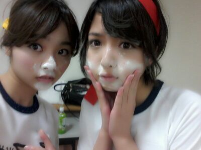
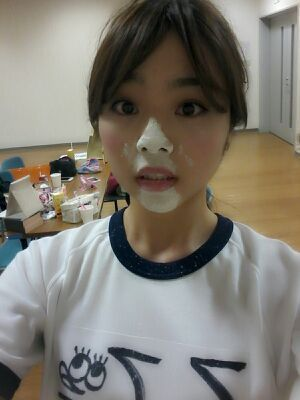
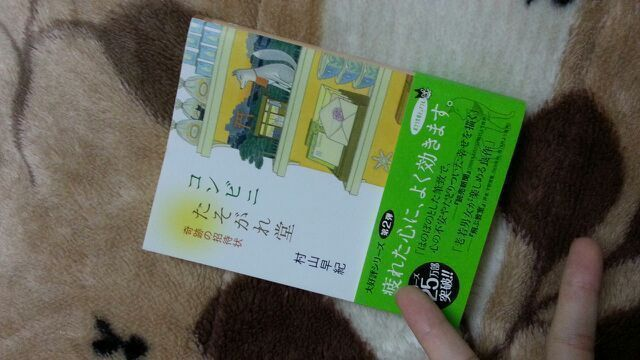

| 2013/06 25 Tue | 川村真洋 今はベッドでゴロンしてTV 見てるよ(*´ω`*) ろっ てぃ− |
へいっ☆
皆様 こんにちわん。
ろってぃ−だよよよよ W

あれ？
これは顔が真っ白白やぁ(・ω・)ノ
ちょっと、、、あ、あの
鼻からアゴにかけて美白。
口の中まで入っちゃったよ(>∨<)

この写真は、そうっ
今回 ガールズルールのDVDの
特典映像に付いてくる
乃木坂46大運動会ーー ))))の時のだお。
楽しみにしててね(〃ω〃)
後、我々が歌っている「扇風機」も
type B に入ってまとぅ！
よろちくう★
ぴょん.
そしてそして
昨日のレッスン帰りに
買って帰った文庫本は・・・・
こちらっ ☆))))

『 コンビニ たそがれ堂 奇跡の招待状 』
大事な探しものがある人だけが
たどり着ける、不思議なコンビニ
たそがれ堂。
ミステリアスな店長が笑顔で
迎えてくれます。
たどり着ける、不思議なコンビニ
たそがれ堂。
ミステリアスな店長が笑顔で
迎えてくれます。
すごく 可愛い。
面白そうだなぁ♪ と思って
本屋に入ってすぐにこの本を手に取り
レジに並びました(*´ω`*)
もう半分読み終わっちゃった //
まひろこの本好きだなぁぁ。
はいっ/// ではっ
し(^3^)/もん返ししますね♪
☆帽子どの位持ってるのかな？
帽子のプレゼントって嬉しい？
★数えてないけど 20個はあります.
帽子ほんっと大好きなんですよ(><)
子供の頃からの帽子好きは
変わりません！
だからプレゼントでもらうと
超嬉しゅうキモチ！！
☆ろってぃ−はマイナーな趣味ある？
★映画借りて見たり、
お笑いも大好き！！
☆ちゃんと『俺いも』みたんやな？
真面目やなあ？
★そういうとこ意外と
超真面目でやんすよ (・ω・)/
☆お好み焼き・たこ焼きは好き？
★あったり前ぢゃねーかよぉーー♪笑
両方 大好きだよーう！！愛してるさかいよ。
☆ロールキャベツは
コンソメ、トマト、クリームどれが好き？
★コンソメ ))))
☆新しい振り付けはアンダー
楽曲『扇風機』？
★あ〜 もちろん扇風機も
やりましたよぉ〜ん(*´ω｀*)
楽しみにしててねん//
☆プリンシパル以来、喉は良くなった？
★よくなりましたよ！
あの時は心配かけちゃって
ごめんねっ(/;´・_・)/
☆ラノベ(漫画)とか読むのかな？
★読んだことないなぁぁ(´・∨・)
おもしろいんだ!?
☆ショートヘアしたことある？
せーへんのー？
★幼稚園の頃からずっと
完璧にロングなの。
いつか 1度だけしたいキモチもあるのよ.
☆中華全般が好き。逆に和食苦手って
変かな？
★中華料理はまひろも大好きだよっ！
あ〜 でも和食あんま好きじゃない人
おるっちゃいますよね？
だから そんな変ぢゃ
ないと思いますよんヽ(´▽｀)/
☆男子に言われて嬉しい言葉って
なんかな？
★ええ 笑？好きなの女の子でも
できたのかな(^∨^)？
「可愛いなあ 笑」とか
「何か最近変わったよな！」
とか不意討ちに言うとかかなあ？
最近の女の子は何言われて
キュンキュンしてるんだろう？
☆最近、無性にろってぃに
会いたくなる時があるんだよ〜(>_<)
衝動を抑える何かいい方法ないかな〜？
★その分、会える時に
いっぱい会おう(〃^ー^〃)？
それまで が〜まんっ)))
今日は以上かな？
皆様。
大好きです！
おやすみなさい (〃_〃)のし